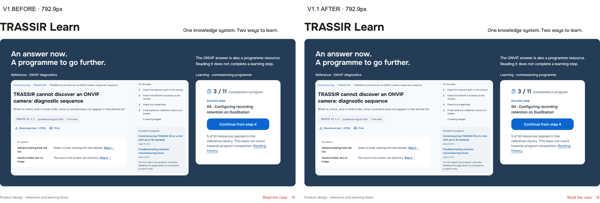
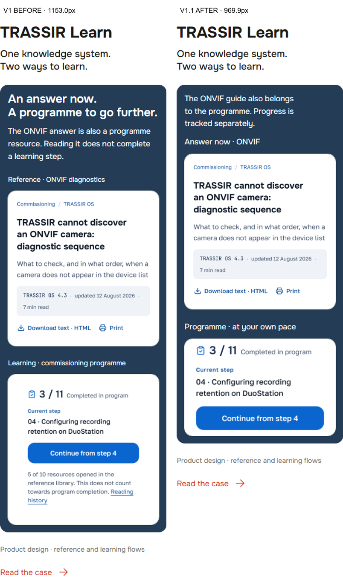
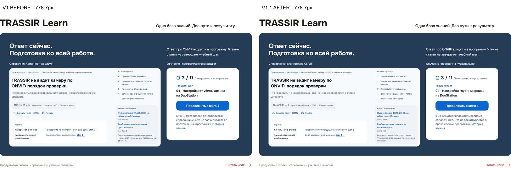
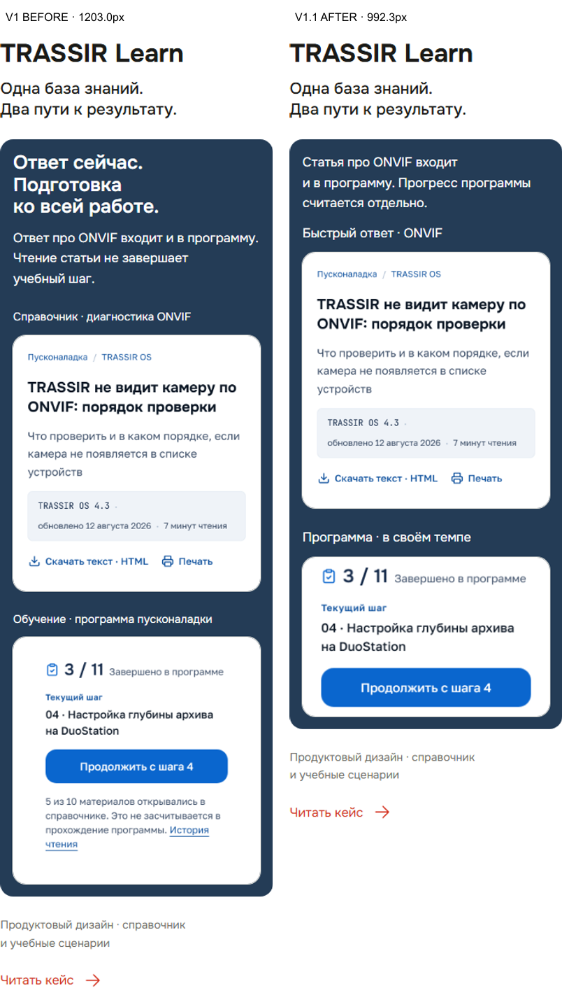

02 November 2026 · Independent acceptance pending. Raw browser screenshots are linked below; comparison boards are labelled derivatives.
BEFORE: coverstagecontextfull
AFTER: coverstagecontextfull



